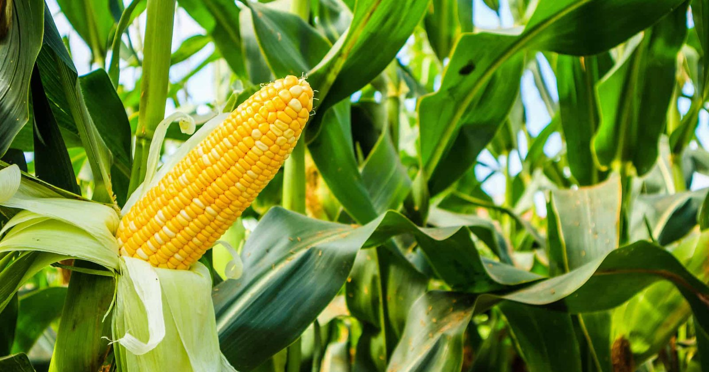
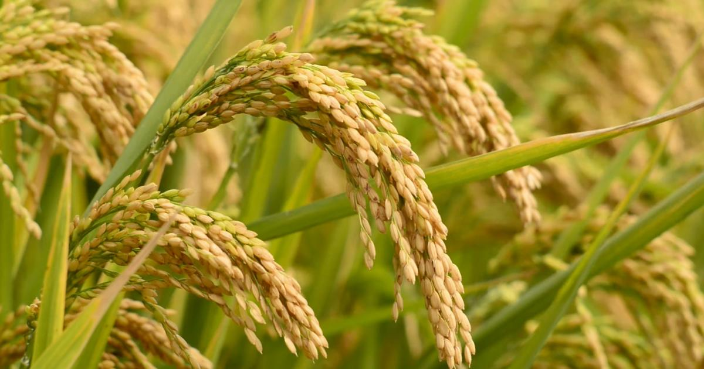

Jagung
Jagung merupakan tanaman yang banyak dibudidayakan di berbagai negara.

Padi
Padi adalah sumber utama karbohidrat bagi mayoritas penduduk dunia.

Gandum
Gandum adalah salah satu tanaman serealia yang paling penting di dunia.